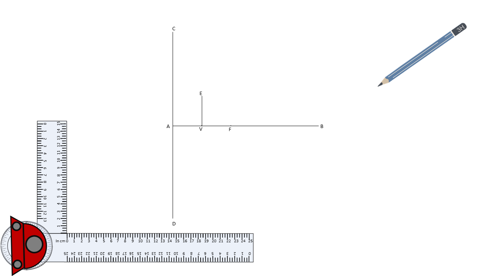
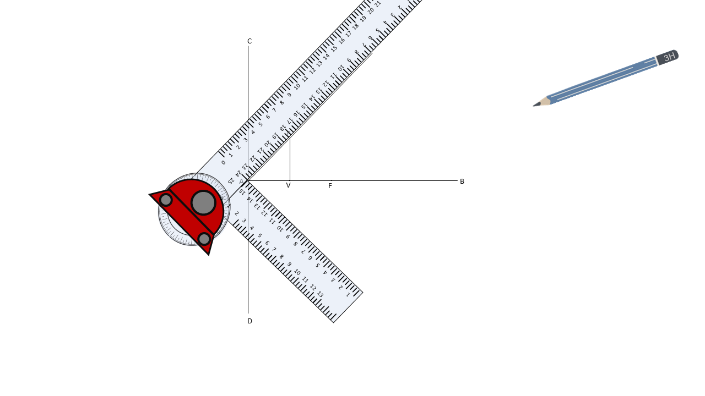

CONIC SECTION
STEP 5 Join VE with point A and produce the line such that the eccentricity is equal to 1.




STEP 5 Join VE with point A and produce the line such that the eccentricity is equal to 1.